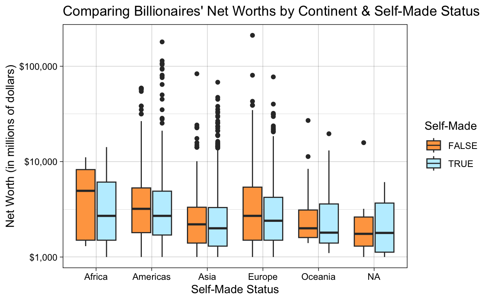
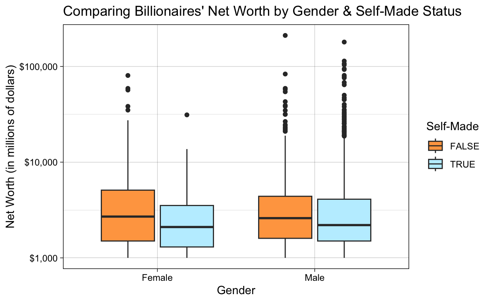

Who Becomes a Billionaire? Why?
There is significant controversy regarding the intense accumulation of wealth by a handful of people worldwide. Of the nearly eight billion people alive today, only a few thousand are billionaires. In fact, over one half of adults in 2022 had net worths less than $1,000 USD. These adults possessed a meager share of the world’s total private wealth: 1.2%. In contrast, 1.1% of adults worldwide were millionaires in 2022, controlling 45.8% of the world’s total private wealth. Some sources predict that these trends will only become more aggravated during the next half-decade.
In this project, I take a look at the wealthiest slice of people: billionaires. The approximately 3,000 billionaires worldwide, as I can conservatively estimate using my dataset, commanded $12.2 trillion USD as a group in 2022.
Specifically, I am concerned with what differentiates the “nouveau riche” from billionaires who inherited their wealth. My research question is: to what extent does being self-made explain whether someone becomes a billionaire? Furthermore, are there more powerful explanatory variables related to being a billionaire, like their gender, age, or geographic location? Or are there more circumstantial characteristics accounting for their wealth, like their industry or the GDP of their country of origin?
The null hypotheses I will test are:
I personally hypothesize that circumstances of birth (e.g. age and gender) will be statistically significant predictors of billionaire net worth, while more “distant” factors like the GDP or population of the country of origin will not be statistically significant.
This research is important because it may better-inform both reader understanding and policy interventions regarding the worldwide concentration of wealth. For instance, what if such concentrated wealth remains so concentrated through inheritance, marriage, and divorce rather than entrepreneurship, education rates, or tax rates? If that’s the case, then spreading the benefits of such concentrated wealth to the public would involve taxing those life events to some extent. In contrast, if wealth remains concentrated because those who make it big have benefited from living in a well-educated country or from specific tax advantages, that would direct policymakers to intervene elsewhere.
The author of the original dataset, who published it to Kaggle for public use, cites Forbes and other financial publications as the sources for his dataset. A total of 2,640 billionaires worldwide are represented in this data.
In addition, I merged the dataset ‘countrycode’ so that I could create a variable representing the continent of the billionaire (‘continent’), in the hopes of better understanding the geographical origins of concentrated wealth.
It is extremely important to note the experimental design of my analysis. Obviously, it is not possible to randomly assign whether an individual becomes a billionaire or not (there’s no world in which researchers could ethically assign one identical twin to be adopted by a ‘normal’ family, and the other twin to be adopted by an extraordinarily wealthy family).
However, we can see that there are still differences among billionaires themselves. Being a billionaire is an arbitrary cutoff point between $999,999,999 and $1,000,000,001 USD. This means I am using a cross-sectional design; there is no before-and-after component to my research. Instead, I am comparing the “control” group of those who inherited their wealth with those who are self-made (and thereby “treated” because they didn’t inherit their wealth).
The data file for this study is Billionaires Statistics Dataset.csv, which I simplified to ‘billionaires’. It contains the following 36 variables:
| Name | Description |
|---|---|
rank |
The ranking of the billionaire in terms of wealth. |
finalWorth |
The final net worth of the billionaire in U.S. dollars. |
category |
The category or industry in which the billionaire’s business operates. |
personName |
The full name of the billionaire. |
age |
The age of the billionaire. |
continent |
Continent of origin of the billionaire. |
country |
The country in which the billionaire resides. |
city |
The city in which the billionaire resides. |
source |
The source of the billionaire’s wealth. |
industries |
The industries associated with the billionaire’s business interests. |
countryOfCitizenship |
The country of citizenship of the billionaire. |
organization |
The name of the organization or company associated with the billionaire. |
selfMade |
Indicates whether the billionaire is self-made (True/False). |
status |
“D” represents self-made billionaires (Founders/Entrepreneurs) and “U” indicates inherited or unearned wealth. |
gender |
The gender of the billionaire. |
birthDate |
The birthdate of the billionaire. |
lastName |
The last name of the billionaire. |
firstName |
The first name of the billionaire. |
title |
The title or honorific of the billionaire. |
date |
The date of data collection. |
state |
The state in which the billionaire resides. |
residenceStateRegion |
The region or state of residence of the billionaire. |
birthYear |
The birth year of the billionaire. |
birthMonth |
The birth month of the billionaire. |
birthDay |
The birth day of the billionaire. |
cpi_country |
Consumer Price Index (CPI) for the billionaire’s country. |
cpi_change_country |
CPI change for the billionaire’s country. |
gdp_country |
Gross Domestic Product (GDP) for the billionaire’s country. |
gross_tertiary_education_enrollment |
Enrollment in tertiary education in the billionaire’s country. |
gross_primary_education_enrollment_country |
Enrollment in primary education in the billionaire’s country. |
life_expectancy_country |
Life expectancy in the billionaire’s country. |
tax_revenue_country_country |
Tax revenue in the billionaire’s country. |
total_tax_rate_country |
Total tax rate in the billionaire’s country. |
population_country |
Population of the billionaire’s country. |
latitude_country |
Latitude coordinate of the billionaire’s country. |
longitude_country |
Longitude coordinate of the billionaire’s country. |
[1] 2300[1] 4623.788[1] 12206800Above is a histogram visualizing the frequency of the main outcome of interest: the net worth (‘finalWorth’) distribution of the billionaires. To help contextualize the values, I added in the median net worth of all of the billionaires in the dataset, as well as the individual net worths of Jeff Bezos, MacKenzie Scott (Jeff Bezos’ former wife, who became a billionaire following their divorce), and Elon Musk. The median net worth of all of the billionaires is approximately $2.3 billion.
As a reminder, these are the null hypotheses I tested. 1. Self-made status is not statistically significant. Self-made billionaires are not wealthier than non-self-made billionaires. 2. Country of origin is not a statistically significant predictor of billionaire net worth. 3. Circumstances of birth, e.g. age and gender, are not statistically significant predictors of billionaire net worth.
To address the first null hypothesis, I first compared the average net worth of self-made and non-self-made billionaires. There is a marked difference: the typical self-made billionaire can expect to have a net worth approximately $505 million USD lower than that of their counterparts with inherited wealth.
| Self-Made Status | Average Net Worth (in millions USD) | Median Net Worth (in millions USD) | Net Worth Standard Dev. |
|---|---|---|---|
| FALSE | 4970.41 | 2600 | 10614.18 |
| TRUE | 4465.40 | 2200 | 9455.30 |
Then, I ran a regression to quantify the statistic significance of these differences.
| (1) | |
|---|---|
| (Intercept) | 4970.411 |
| s.e. = 341.731 | |
| p = <0.001 | |
| selfMadeTRUE | −505.013 |
| s.e. = 412.484 | |
| p = 0.221 | |
| Num.Obs. | 2640 |
| R2 | 0.001 |
| R2 Adj. | 0.000 |
Just as the box plot above demonstrated, being self-made equates to an approximate $505 million decrease in net worth (as shown by the coefficient on the variable selfMadeTRUE). However, with an alpha of \(\alpha\) = 0.1, the p-value of 0.221 is not statistically significant, so we cannot reject the null hypothesis that there’s no difference in net worth between self-made and not-self-made billionaires.
Then I tested the second null hypothesis: that country of origin is not a statistically significant predictor of billionaire net worth.
It is also interesting to take a look at the geographic trends of where billionaires are from. Interestingly, over one fourth of the world’s billionaires are in the United States, which represents only about 4% of the world’s population. Only China comes close, with 20% of the world’s billionaires and 18% of the world’s population. In short, Americans are extremely overrepresented in the population of billionaires worldwide.
| Country | Count |
|---|---|
| United States | 754 |
| China | 523 |
| India | 157 |
| Germany | 102 |
| United Kingdom | 82 |
| Russia | 79 |
| Switzerland | 78 |
| Hong Kong | 68 |
| Italy | 55 |
| Singapore | 46 |
| Brazil | 44 |
| Australia | 43 |
| Taiwan | 43 |
| Canada | 42 |

It is also interesting to take a look at the geographic trends of where billionaires are from. First, to visualize where the majority of billionaires live, I generated a count of the top 14 countries where billionaires live. In total, almost two-thirds of the world’s billionaires lived in these countries.
| Country | Count |
|---|---|
| United States | 754 |
| China | 523 |
| India | 157 |
| Germany | 102 |
| United Kingdom | 82 |
| Russia | 79 |
| Switzerland | 78 |
| Hong Kong | 68 |
| Italy | 55 |
| Singapore | 46 |
| Brazil | 44 |
| Australia | 43 |
| Taiwan | 43 |
| Canada | 42 |
Over one fourth of the dataset’s billionaires are in the United States, which represents only about 4% of the world’s population. Only China comes close, with 20% of the world’s billionaires and 18% of the world’s population. In short, Americans are far overrepresented in the population of billionaires worldwide.
To further examine this point, I ran a regression to test the relationship between net worth and country of origin (which is much too large to print). Of the top 14 countries, only one was statistically significant at a p-value of \(\alpha\) = 0.1: the United States, with a p-value of p = 0.025.
Furthermore, I found that residence in no continent had a statistically significant bearing on the net worth of the billionaire.
| (1) | |
|---|---|
| (Intercept) | 4882.353 |
| s.e. = 2390.410 | |
| p = 0.041 | |
| continentAmericas | 947.213 |
| s.e. = 2413.493 | |
| p = 0.695 | |
| continentAsia | −1311.547 |
| s.e. = 2409.167 | |
| p = 0.586 | |
| continentEurope | 55.596 |
| s.e. = 2424.894 | |
| p = 0.982 | |
| continentOceania | −802.353 |
| s.e. = 2805.834 | |
| p = 0.775 | |
| Num.Obs. | 2602 |
| R2 | 0.010 |
| R2 Adj. | 0.008 |
In conclusion, when it comes to the second null hypothesis, I found that no country of origin was statistically significant to a billionaire’s net worth other than the United States, Belgium, France, and Mexico.
Finally, I analyzed my third null hypothesis: that circumstances of birth like age and gender are not statistically significant to net worth.
In the data visualization below, we see that male and female billionaires perform comparatively well with one another. Although the average net worth of female billionaires trails that of their male counterparts by approximately $61 million USD, their median net worth is actually $200 million USD higher.
| Gender | Average Net Worth (in millions USD) | Median Net Worth (in millions USD) | Net Worth Standard Dev. |
|---|---|---|---|
| F | 4570.33 | 2500 | 7612.48 |
| M | 4631.61 | 2300 | 10119.86 |

However, this picture is somewhat complicated by the fact that female billionaires are rare. In this dataset, fewer than 400 of the 2,640 recorded billionaires are female. Not only that, the majority of female billionaires inherited their wealth. This trend reverses for male billionaires, the majority of whom are self-made and did not inherit their wealth.
| (1) | |
|---|---|
| (Intercept) | 4570.326 |
| s.e. = 535.806 | |
| p = <0.001 | |
| genderM | 61.285 |
| s.e. = 573.670 | |
| p = 0.915 | |
| Num.Obs. | 2640 |
| R2 | 0.000 |
| R2 Adj. | 0.000 |
The regression and data visualizations demonstrate an important point. Although far fewer women are billionaires, the difference in net worths between male and female billionaires is not at all statistically significant. With an alpha at \(\alpha\) = 0.1 and a p-value of p = 0.915, we cannot reject the null hypothesis that gender is not statistically significant.
I then went on to analyze the statistical significance of age and net worth. First, I divided ages into cohorts to better visualize the typical ages of billionaires. This is what I found:
Overall, elderly billionaires are far more common than young billionaires. It also seems that there is a relatively normal distribution of ages, centered around the 60-79 year-old cohort.
I then ran a regression of net worth and age, where I found the following:
| (1) | |
|---|---|
| (Intercept) | 1403.757 |
| s.e. = 980.558 | |
| p = 0.152 | |
| age | 50.284 |
| s.e. = 14.751 | |
| p = <0.001 | |
| Num.Obs. | 2575 |
| R2 | 0.004 |
| R2 Adj. | 0.004 |
With an alpha at \(\alpha\) = 0.1 and a p-value of p < 0.001, the relationship between net worth and age is highly statistically significant. It is also by far the most statistically significant variable I examined for this analysis. On average, for every one-point (one-year) increase in age, we see a $50 million increase in net worth (the coefficient on the ‘age’ variable in the regression).
This data analysis led to some interesting conclusions about the factors that are statistically significant to billionaire net worth. Surprisingly (to this author), neither self-made status or gender were statistically significant. In addition, country of origin was statistically significant only for four countries: the United States, France, Belgium, and Mexico. The only factor proving undeniably statistically significant was age.
If I were to have more time and resources, I would want to study where this wealth is held. If age is so statistically significant, I would want to tease out whether that is due to financial factors like compound interest, or if there is a relationship between the business experience of a billionaire and their success. This might have significant implications for policies like systems of capital gains taxes. I also believe my analysis would improve if I had the resources and data making it possible to compare demographic statistics about billionaires at large with the demographics and the net worths of all individuals worldwide.
Finally, one major limitation to this cross-sectional design is that it assumes that control and treatment groups are identical on average. However, it goes without saying that billionaires cannot be assumed to be representative of the world population at large, even if they’re self-made. After all, the definition of “self-made” is blurry. Many self-made billionaires came from wealthy personal backgrounds that may have provided them with the opportunities they needed to become billionaires, even though they did not technically inherit billions of dollars.
# Setup chunk
library(tidyverse)
library(dplyr)
library(ggplot2)
library(infer)
library(knitr)
library(broom)
library(modelsummary)
billionaires <- read.csv("Billionaires Statistics Dataset.csv")
# after install.packages("countrycode")
library(countrycode)
# Add continent variable
billionaires <- billionaires |>
mutate(continent = countrycode(country, "country.name", "continent"))
# Calculate median final worth of the billionaires
median_finalWorth <- median(billionaires$finalWorth)
print(median_finalWorth)
# Calculate mean final worth of the billionaires
mean_finalWorth <- mean(billionaires$finalWorth)
print(mean_finalWorth)
# Calculate aggregate wealth owned by the billionaires
billionaires_aggregate_wealth <- sum(billionaires$finalWorth)
print(billionaires_aggregate_wealth)
# Distribution of net worth
ggplot(data = billionaires,
mapping = aes(x = finalWorth)) +
geom_histogram(color = "tan1", fill = "lightblue1") +
theme_minimal() +
labs(title = "Frequency of Billionaire Net Worth",
x = "Net Worth (in millions USD)",
y = "Count") +
# Adding a vertical line at Elon Musk's net worth ($180 billion!)
geom_vline(xintercept = 180000,
linetype = "dashed", color = "darkgreen",
size = .2, alpha = 0.7) +
# Adding a text label for Elon Musk's net worth
annotate("text", x = 180000, y = 30,
label = "Elon Musk's Net Worth ($180b)", color = "darkgreen",
angle = 90, vjust = -1.5, size = 2, hjust = -0.5) +
# Adding a vertical line at MacKenzie Scott's net worth ($24,400,000,000 billion!)
geom_vline(xintercept = 24400,
linetype = "dashed", color = "darkgreen",
size = .2, alpha = 0.7) +
# Adding a text label for MacKenzie Scott's net worth
annotate("text", x = 24400, y = 30,
label = "MacKenzie Scott's Net Worth ($24.4b)", color = "darkgreen",
angle = 90, vjust = -1.5, size = 2, hjust = -0.5) +
# Adding a vertical line at Jeff Bezos's net worth ($114,400,000,000 billion)
geom_vline(xintercept = 114000,
linetype = "dashed", color = "darkgreen",
size = .2, alpha = 0.7) +
# Adding a text label for Jeff Bezos's net worth
annotate("text", x = 114000, y = 30,
label = "Jeff Bezos's Net Worth ($114b)", color = "darkgreen", size = 2,
angle = 90, vjust = -1.5, size = 2, hjust = -0.5) +
# Adding a vertical line at the median
geom_vline(xintercept = median_finalWorth,
linetype = "dashed", color = "darkred",
size = .2, alpha = 0.7) +
# Adding a text label for the median
annotate("text", x = median_finalWorth, y = 30,
label = "Median ($2.3b)", color = "darkred", size = 2,
angle = 90, vjust = 1.5, size = 2, hjust = -2) +
# Adding a vertical line at the mean
geom_vline(xintercept = mean_finalWorth,
linetype = "dashed", color = "darkred",
size = .2, alpha = 0.7) +
# Adding a text label for the mean
annotate("text", x = mean_finalWorth, y = 30,
label = "Mean ($4.6b)", color = "darkred", size = 2,
angle = 90, vjust = -1.5, size = 2, hjust = -2)
billionaires |>
group_by(selfMade) |>
summarize(mean(finalWorth), median(finalWorth), sd(finalWorth)) |>
knitr::kable(digits = 2,
col.names = c("Self-Made Status",
"Average Net Worth (in millions USD)",
"Median Net Worth (in millions USD)",
"Net Worth Standard Dev."))
ggplot(data = billionaires,
aes(x = selfMade,
y = finalWorth,
fill = selfMade)) +
geom_boxplot() +
scale_y_log10(labels = scales::dollar_format(prefix = "$")) +
labs(x = "Self-Made Status",
y = "Net Worth (in millions of dollars)",
title = "Comparing Billionaires' Net Worths by Self-Made Status",
fill = "Self-Made") +
theme_linedraw() +
scale_fill_manual(values = c("tan1", "lightblue1"))
# Running a regression of net worth and self-made status ('fit_billionaire_selfMade')
fit_billionaire_selfMade <- lm(finalWorth ~ selfMade, data = billionaires)
modelsummary::modelsummary(fit_billionaire_selfMade,
statistic = c("s.e. = {std.error}",
"p = {p.value}"),
gof_map = c("nobs", "r.squared",
"adj.r.squared"))
# Determing top 14 countries with most billionaires
country_counts <- billionaires |>
group_by(country) |>
summarise(count = n())
sorted_countries <- country_counts[order(-country_counts$count), ]
top_14_countries <- head(sorted_countries, 14)
knitr::kable(top_14_countries,
col.names = c("Country", "Count"))
ggplot(data = billionaires,
aes(x = continent,
y = finalWorth,
fill = selfMade)) +
geom_boxplot() +
scale_y_log10(labels = scales::dollar_format(prefix = "$")) +
labs(x = "Self-Made Status",
y = "Net Worth (in millions of dollars)",
title = "Comparing Billionaires' Net Worths by Continent & Self-Made Status",
fill = "Self-Made") +
theme_linedraw() +
scale_fill_manual(values = c("tan1", "lightblue1"))
# Determing top 14 countries with most billionaires
country_counts <- billionaires |>
group_by(country) |>
summarise(count = n())
sorted_countries <- country_counts[order(-country_counts$count), ]
top_14_countries <- head(sorted_countries, 14)
knitr::kable(top_14_countries,
col.names = c("Country", "Count"))
# Running a regression of country residence and net worth
fit_billionaire_country <- lm(finalWorth ~ country, data = billionaires)
modelsummary::modelsummary(fit_billionaire_country,
statistic = c("s.e. = {std.error}",
"p = {p.value}"),
gof_map = c("nobs", "r.squared",
"adj.r.squared"))
# Running a regression of country residence and net worth
fit_billionaire_country <- lm(finalWorth ~ country, data = billionaires)
# Get the summary of the regression model
summary_fit <- summary(fit_billionaire_country)
# Extract the p-values for each coefficient
p_values <- summary_fit$coefficients[, "Pr(>|t|)"]
# Set alpha
alpha <- 0.1
# Filter countries based on the p-values
significant_countries <- names(p_values[p_values < alpha])
# Display the significant countries
print(significant_countries)
# Running a regression of continent and net worth
fit_billionaire_continent <- lm(finalWorth ~ continent, data = billionaires)
modelsummary::modelsummary(fit_billionaire_continent,
statistic = c("s.e. = {std.error}",
"p = {p.value}"),
gof_map = c("nobs", "r.squared",
"adj.r.squared"))
billionaires |>
group_by(gender) |>
summarize(mean(finalWorth), median(finalWorth), sd(finalWorth)) |>
knitr::kable(digits = 2,
col.names = c("Gender",
"Average Net Worth (in millions USD)",
"Median Net Worth (in millions USD)",
"Net Worth Standard Dev."))
ggplot(data = billionaires,
aes(x = gender,
y = finalWorth,
fill = selfMade)) +
geom_boxplot() +
scale_y_log10(labels = scales::dollar_format(prefix = "$")) +
labs(x = "Gender",
y = "Net Worth (in millions of dollars)",
title = "Comparing Billionaires' Net Worth by Gender & Self-Made Status",
fill = "Self-Made") +
scale_x_discrete(labels = c("Female", "Male")) +
theme_linedraw() +
scale_fill_manual(values = c("tan1", "lightblue1"))
billionaires |>
ggplot(mapping = aes(x = gender,
fill = selfMade)) +
geom_bar(position = "dodge") +
theme_minimal() +
scale_fill_manual(values = c("tan1", "lightblue1")) +
scale_x_discrete(labels = c("Female", "Male")) +
labs(title = "Frequency of Billionaires by Gender and Self-Made Status",
y = "Count",
x = "Gender",
fill = "Self-Made Status")
# Running a regression of net worth and gender ('fit_billionaire_gender')
fit_billionaire_gender <- lm(finalWorth ~ gender, data = billionaires)
modelsummary::modelsummary(fit_billionaire_gender,
statistic = c("s.e. = {std.error}",
"p = {p.value}"),
gof_map = c("nobs", "r.squared",
"adj.r.squared"))
billionaires |>
mutate(
age_cohort = case_when(
age < 20 ~ "Under 20",
age >= 20 & age < 40 ~ "Between 20 and 39",
age >= 40 & age < 60 ~ "Between 40 and 59",
age >= 60 & age < 80 ~ "Between 60 and 79",
age >= 80 ~ "Age 80 and Above",
), na.rm = TRUE) |>
ggplot(mapping = aes(x = fct_reorder(age_cohort, age),
fill = selfMade)) +
geom_bar(position = "dodge") +
theme(axis.text.x = element_text(angle = 45, hjust = 1)) +
scale_fill_manual(values = c("tan1", "lightblue1")) +
labs(title = "Frequency of Billionaires by Age Cohort and Self-Made Status",
y = "Count",
x = "Age Cohort",
fill = "Self-Made Status")
# Running a regression of net worth and age ('fit_billionaire_age')
fit_billionaire_age <- lm(finalWorth ~ age, data = billionaires)
modelsummary::modelsummary(fit_billionaire_age,
statistic = c("s.e. = {std.error}",
"p = {p.value}"),
gof_map = c("nobs", "r.squared",
"adj.r.squared"))World Population by Country 2023 (Live), https://worldpopulationreview.com. Accessed 11 December 2023.
“Billionaires Statistics Dataset (2023).” Kaggle, https://www.kaggle.com/datasets/nelgiriyewithana/billionaires-statistics-dataset. Accessed 11 December 2023.
Dyvik, Einar H. “Worldwide wealth distribution 2022.” Statista, 23 August 2023, https://www.statista.com/statistics/203930/global-wealth-distribution-by-net-worth/. Accessed 11 December 2023.
Neufeld, Dorothy, and Niccolo Conte. “Visualizing the Pyramid of Global Wealth Distribution.” Visual Capitalist, 2 November 2023, https://www.visualcapitalist.com/global-wealth-distribution/. Accessed 11 December 2023.